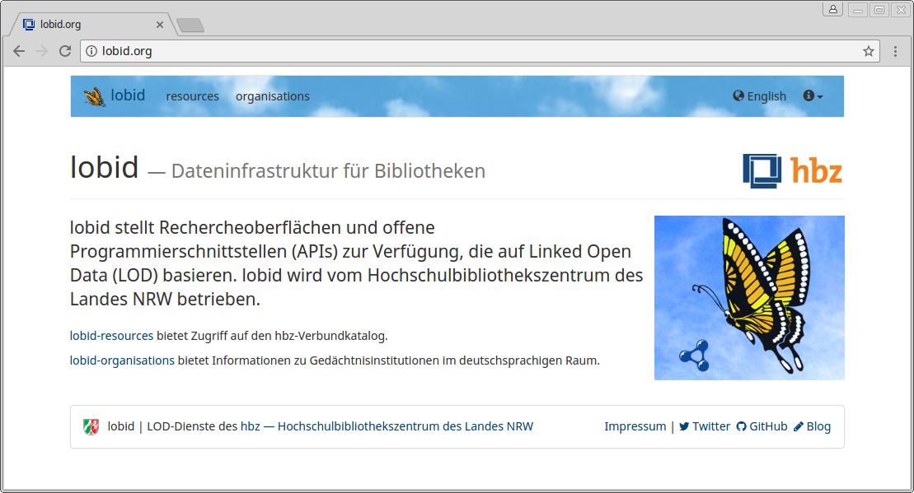

lobid-organisations
Ein umfassendes Verzeichnis deutscher Informationseinrichtungen
Adrian Pohl / @acka47
Linked
Open Data, Hochschulbibliothekszentrum NRW (hbz)

Bibcast, World Wide Web, 2017-05-23
Diese Präsentation:
http://slides.lobid.org/bibcast17/

Etherpad zur Präsentation
https://etherpad.gwdg.de/p/bibcast17-pohl
(Gerne viele Fragen dort reinschreiben)
lobid
lobid
Linked-Data-basierte Dateninfrastruktur
Version 2.0 seit diesem Jahr produktiv
Rechercheoberflächen für Endanwender &
Web-APIs (read only) für Anwendungsentwickler
Basiert auf Daten aus verschiedenen Quellen
Datenquellen


lobid-organisations
Datenbasis
- Sigelverzeichnis: 14.779 Einträge
- Deutsche Bibliotheksstatistik (DBS): 12.192 Einträge
- Macht dublettenbereinigt: 21.987 Einträge
Inhalte
Bibliotheken (63%), Museen (32%) und Archive (4%) aus DACH
...davon 95% aus Deutschland
Demo
https://lobid.org/organisations
Ist ihre Institution auf Wikidata?
Nachschauen und https://www.wikidata.org
Informationen ergänzen: image, ISIL, WiFi, Barrierefreiheit etc.
Musterbeispiel:
Provenienz
Dokumentation
Siehe auch "Documenting the lobid API" im lobid-Blog
Was dokumentieren?
Dataset
API, inklusive Response-Format
RDF-Properties und -Klassen
Provenienz
Dataset-Beschreibung

Und der Rest?
Dröge, ohne Kontext:

Ich brauche Beispiele!
Aber:
Beispiele sind oft nur Anhängsel von Dokumentation, wenn überhaupt gegeben.
"Deskriptiver Ansatz" ist vorherrschend.
Das Beispiel ins Zentrum der Dokumentation stellen!
Warum nicht strukturierte Informationen (Name, Beschreibung, URI etc.) direkt an Beispiele hängen?
Heutzutage kein Problem mit Web-Annotations-Tools wie hypothes.is
Annotierte Informationen
Name
Beschreibung
Abdeckung
Verwendungsbeispiele
Provenienz
URI
Vorteile
Kontextualisierung der Dokumentation
Beispiel ist aktuell, weil Annotation von Live-Daten
Rückmeldungen/Fragen von Nutzern via hypothes.is
Intuitive Handhabung
Erleichtertes Verständnis
Ausblick
Anreicherung der Anzeige mit Wikidata-Informationen (#348)
GND-Links ergänzen (#361)
Größere Landkarte für kartenbasierte Suche (#346)
Vereinfachter Prozess zur Korrektur der DBS-Daten
CC0 für DBS-Stammdaten